În cele ce urmează , voi realiza o listă cu diferite lunete :
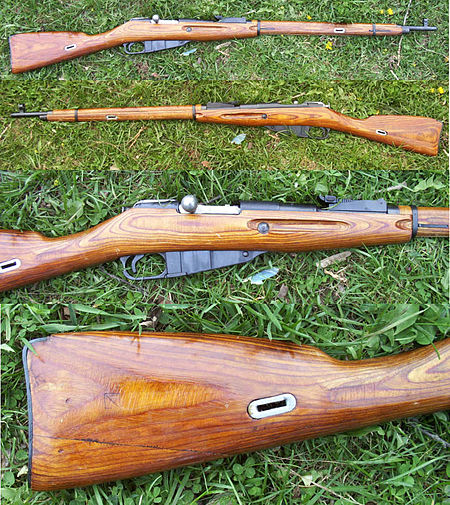
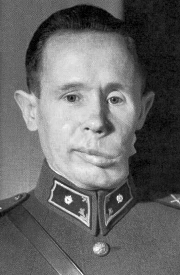
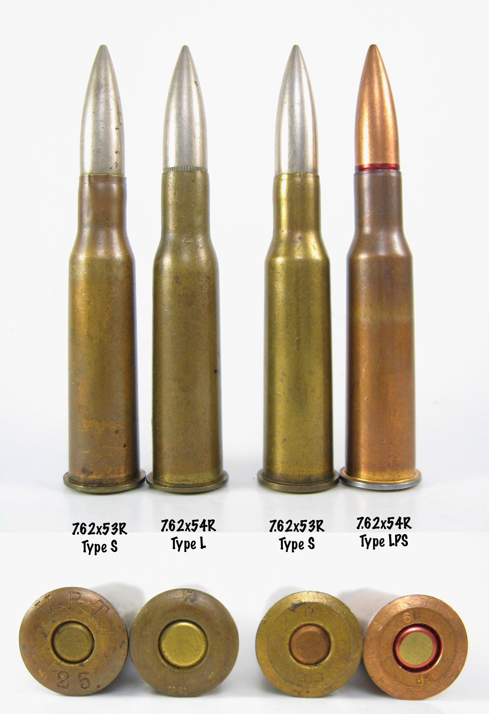
Lunetă : Mosin-Nagant M91/30
Producător : Captain Sergei Mosin , Émile Nagant
Origine : Rusia
Muniție : 7.62×54mmR cartridge
Mosin-Nagant M91/30 , cunoscut în occident ca Mosin-Nagant și în Rusia și fosta Uniune Sovietică ca pușca lui Mosin , este o pușcă cu cinci focuri , cu bolțuri , o revistă (mag) internă, o pușcă militară dezvoltată din 1882 până în 1891 și folosită de forțele armate ale : Imperiului Rus, Uniunii Sovietice și a diferitelor alte națiuni. Este una dintre cele mai produse puști militare de acțiune cu bolțuri din istorie , cu peste 37 de milioane de unități care au fost făcute de la înființarea sa în 1891, și , în ciuda vârstei sale , a fost folosit în diverse conflicte din întreaga lume până în prezent . Acesta folosește muniție de tipul 7.62×54mmR . Această armă a fost de asemena folostă de către legendarul lunetist finlandez Simo Häyhä (s-ar putea să-l știți după porecla lui - "The White Death"="Moartea albă") . Simo Häyhä este cel care deține în prezent recordul de cele mai multe ucidrie confirmat de orice lunetist vreodată . Häyhä are 505 ucideri confirmate pe numele lui și chiar se sugerează că are mai mult. The Winter War (cel dintre Rusia și Finlanda) a durat aproximativ 100 de zile . Cu toate acestea, într-un interval de timp atât de scurt , se crede că Moartea Albă a ucis între 500 și 542 de soldați ruși . A reușit să ucidă toți acești soldați în timp ce folosea o pușcă învechită . Camarazii săi , pe de altă parte , foloseau lentile telescopice de ultimă generație pentru a-și ucide țintele .
În condiții extreme de iarnă , Häyhä a folosit doar țintele de fier de pe armă . Nu l-a deranjat . Chiar a simțit că a adăugat la precizia lui.
Se spune că acest om a fost născut ca să fie soldat . Acesta ajunsese să fie atât de cunoscut și de temut de către ruși cât să trebuiască să se instaleze counter-snipers , să se tragă de către în direcția din care credeau ei că el i-a împuscat , să lanseze atacuri de artilerie în presupusa poziție a lui și chiar să i se pună o sumă de bani pe cap (dorit mort) . Bineînteles că toate aceste metode au eșuat . În schimb , spre finalul războiului , cineva a reușit să îl împuște în partea stângă a mandibulei , dar acesta a fost salvat și a apucat să își trăiască bătrânețea în pace .
Barrett M82, standardizat de către armata SUA ca M107, este o armă recul-operată , semi-automtă (anti-materiale) de precizie . Pușcă dezvoltată de către compania americană American Barrett Firearms Manufacturing . În ciuda denumirii sale ca o pușcă menită distrugerii vehiculelor , este folosit de unele forțe armate ca un sistem anti-personal . Varianta M107 este , de asemenea, numit Light Fifty pentru muniția .50 BMG (12.7×99mm NATO) și greutate semnificativ mai ușoare în comparație cu aplicațiile anterioare . Arma se găsește în trei variante , originalul M82A1 (și A3) , bullpup M82A2 și Barrett M107A1 cu frână botniță proiectată să accepte un supresor și fabricată din titan în loc de oțel . M82A2 nu mai este fabricată , deși XM500 poate fi văzut ca succesorul său .
Preț actual : $8.500
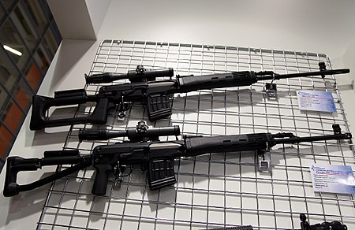
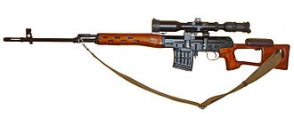
Lunetă : Dragunov sniper rifle (SVD-63)
Producător : Yevgeny Dragunov și mai târziu de către Izhmash (Kalashnikov Concern)
Origine : Russia
Muniție : 7.62×54mmR
Dragunov-pușcă cu lunetă (SVD-63) , oficial "Sniper Rifle, System of Dragunov, Model of the Year 1963" ( este o pușcă semi-automată , desemnată muniției de tip 7.62×54mmR și dezvoltat în Uniunea Sovietică) . Dragunov-ul a fost conceput ca o armă de sprijin de echipă , deoarece , în conformitate cu doctrinele militare sovietice și sovietice derivate , capacitatea soldaților de a lupta de la distanță cu lunete s-a pierdut de când s-au intrdous automatele și SMG-urile (referindu-se la sodații din generațiile mai noi) (care sunt optimizate pentru lupta la distanțe mici și medii , luptă cu foc rapid) . Acesta a fost dezvoltată în 1957-1963 și selectată ca arma câștigătoarea a unui concurs care a inclus trei grupuri concurente de designeri , conduse de Serghei Simonov , Aleksandr Konstantinov și Yevgeny Dragunov . Testarea extensivă pe teren a puștilor propuse într-o gamă largă de condiții de mediu a dus la acceptarea în exploatare a propunerii lui Dragunov în iulie 1963 . Un lot inițial de preproducție format din 200 de puști a fost asamblat în scopuri de evaluare , iar din 1964 producția în serie a fost realizată de Izhmash , numită mai târziu Kalashnikov Concern .
De atunci, Dragunov a devenit arma standard de sprijin a mai multor țări , inclusiv cele ale fostului Pact de la Varșovia . China a produs o copie fără licență a SVD-ului prin mostre de inginerie inversă capturate în timpul războiului sino-vietnamez ca tipul 79 și 85 . Iranul a produs , de asemenea , o armă , Nakhjir 3 , care a fost o copie directă a tipului chinezesc 79 .
Preț actual : $3.266
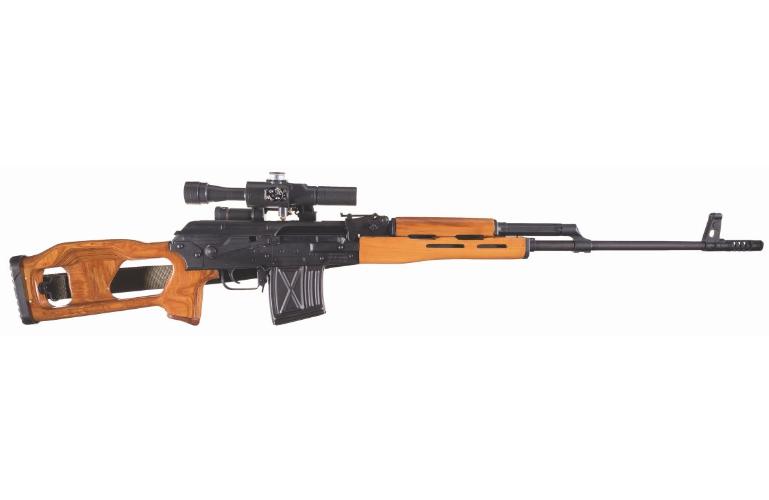
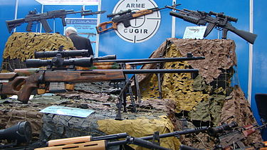
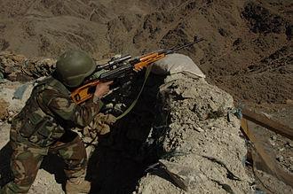
Lunetă : PSL (luntă românească)
Producător : Uzina Mecanica Cugir
Origine : România
Muniție : 7.62×54mmR
PSL (Pușcă Semiautomată 7,62 mm cu Lunetă , model 1974 , "pușcă semi-automată") este o pușcă militară crată în România . Este , de asemenea , numit PSL-54C , Romak III , FPK și SSG-97 (Scharfschützengewehr 1997) . Deși similară ca aspect , scop și specificații cu SVD Dragunov-ul , pușca PSL este complet diferită din punct de vedere mecanic și se bazează pe mitraliera ușoară RPK . După refuzul României socialiste de a se alătura invaziei Cehoslovaciei , relațiile cu Uniunea Sovietică s-au înrăutățit . Pentru a-și contrabalansa dependența de echipamentele militare sovietice , România a accelerat dezvoltarea industriei sale de armament , bazându-se în principal pe planurile și licențele sovietice . Deoarece sovieticii nu erau dornici să facă schimb de informații tehnice despre SVD Dragunov , a început un proiect de dezvoltare a PSL-ului .
Puștile PSL au fost fabricate inițial la Uzina Mecanica Cugir din Cugir , România , începând cu 1974 . Au fost produse și echipate toate ramurile Armatei Române , printre care și mai multe trupe interne și unități de poliție și Gărzi Patriotice . După o consolidare a arsenalelor militare atunci când România a aderat la NATO , a avut loc o divizare a fabricii , producția PSL continuând la Cugir sub brandul SC Fabrica de Arme Cugir SA (arsenalul ARMS), România.
Pușca PSL a fost proiectată pentru a satisface toate cerințele SVD Dragunov-ului . Aspectul său este similar cu pușca cu lunetă Dragunov , dar ele împart doar trei componente , acelea fiind muniția, optica și baionetele . Scopul armei este de a fi înmânată soldatilor cu rolul de a asista colegii lor și de a elimina inamicii care se află la o distanță considerabilă , greu de nimerit cu arme automate (AKM , de exemplul) sau cu SMG-uri .
Preț actual : $2.200
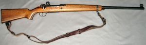
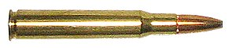
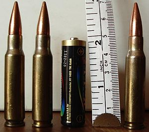
Lunetă : Kongsberg M59-(Mauser M59)/M59F1
Producător : Kongsberg Small Arms , Kongsberg Gruppen
Origine : Norvegia
Muniție : 7.62×63mm/7.62 NATO
Kongsberg M59 (cunoscut și sub numele de KV59) este o pușcă cu lunetă produsă de Kongsberg Arms of Norway bazată pe K98k din timpul ocupației germane din al Doilea Război Mondial , într-un mod similar cu cel de la Kongsberg M67 . Chiar dacă aceste puști sunt uneori numite Mauser M59 și Mauser M67 , acestea nu au fost produse licențiate de Mauser , dar au fost produse de Kongsberg și comercializate ca atare . Kongsberg Våpenfabrikk (Kongsberg Gruppen) a introdus M59-ul (de asemenea , notat KV59 ) în 1959 , prima dată fiich creat pentru muniția de tip .30-06, dar la scurt timp după aceea producția a fost schimbată pentru a utiliza muniția de tip NATO 7.62 . Puștile M59 dotate pentu muniția NATO 7.62 au fost denumite M59F1 . M59F1 a servit mai întâi ca o pușcă cu lunetă pentru forțele armate . După introducerea armei NM149 , M59F1 a fost dată soldaților din Norwegian Home Guard (Heimevernet) până în anii 1990 . Acesta a fost , de asemenea , folosită ca o pușcă pentru sport și vânătoare , având avantajul față de Krag-Jørgensen M1894 că nu suferea schimbari schimbări de traiectorie a glonțului în vreme ploioasă. Astfel , mulți oameni au avut un Krag-Jørgensen M1894 pentru zilele însorite și un Mauser (M59F1) pentru zilele ploioase.
Preț actual : £449.99
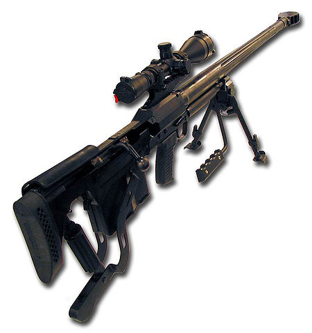
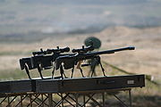
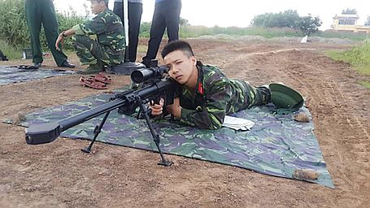
Lunetă : WKW Wilk
Producător : Zakłady Mechaniczne Tarnów
Origine : Polonia
Muniție : .50 BMG
WKW Tor sau Wilk (Wolf) este o pușcă modernă anti-materiale și/sau cu lunetă produsă în Polonia de fabrica Zakłady Mechaniczne Tarnów . Porecla "WKW Tor" vine de la Wielkokalibrowy Karabin Wyborowy sau Large Caniel Rifle . Denumirea sa militară în armata poloneză este cunoscută sub numele de Tor . Această pușcă a fost dezvoltat între 2000 și 2004 și primi soldați selectați în armata poloneză au primit puști Wilk / Tor în jurul anului 2005 .
WKW Wilk / Tor anti-materiale și/sau cu lunetă face uz un șurub rotativ de aspect bull-pup . Acesta este alimentat prin încărcătoare detașabile și este echipat cu un bipod pliabil și reglabil și un monopod reglabil în spate . Echipamentul standard de observare este o țintă Schmidt & Bender X3−12 P/MII , care este plasat pe șinele Picatinny , deasupra receiver-ului .